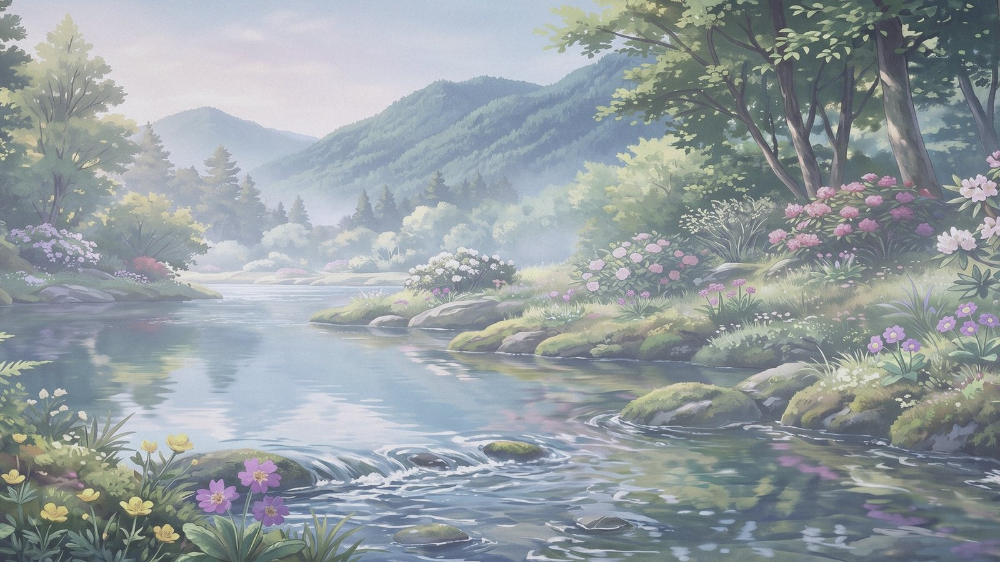
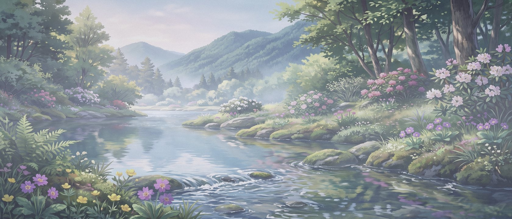

01
纸先于色
背景是一张纸，不是一块屏幕。微暖的米色、一盏泄冷的雾灰、深灰的夜，先决定纸，再决定墨。正文对比保持在 7:1 以上，但纸永远不发亮。

同一处溪谷 · 四时图 800 / 1600 · AVIF / WebP / JPG
01 · 四次显影
四张图来自同一张 21:9 母图的 16:9 取景、同一张参数表。山形不动，水面不动，只有曝光、色温、雾与月色在变。点开任意一张，去那束光里读一篇长文。
02 · 并排
左侧是夜月，右侧是午荫。拖动分界，看光怎样从水面退场；这不是两张不同的画，是同一帧的两次显影。
03 · 壁纸
16:9 留在屏幕上，21:9 留给超宽屏。两张都从同一张母图取景，四时各自显影；下载是 1920×1080 与 2520×1080 的 JPG，不再压成缩略图。

源图 flower.jpg · 2416×1024 · 构建时取 2520×1080 母图，再取 16:9 与 21:9。当前主题：溪山晓雾。
01
背景是一张纸，不是一块屏幕。微暖的米色、一盏泄冷的雾灰、深灰的夜，先决定纸，再决定墨。正文对比保持在 7:1 以上，但纸永远不发亮。
02
组件只认识 --bg、--text、--accent。四个时辰各自给值，切换时没有哪个局部会忘记变，也没有哪条规则需要重写。
03
同一张母图、16:9 与 21:9 两种取景，只换曝光、色温、雾的厚薄与夜里的月光。四时的图像层各自叠在固定位置交叉淡入，山形不动；情绪来自光，不来自新的插画。
好的主题不是换一张壁纸，
是让同一段文字，
在不同时辰里都成立。
| 时辰 | 线性曝光 | 白平衡 R / G / B | 对比 | 饱和 | 雾 | 再补 |
|---|---|---|---|---|---|---|
dawn溪山晓雾 |
×0.90 | 0.92 / 0.99 / 1.10 | 0.86 | 0.62 | 0.25 | lift 0.060 · 蓝调 0.10 · 辉光 0.18 |
noon溪山午荫 |
×1.06 | 1.02 / 1.01 / 0.99 | 1.08 | 1.10 | — | 清晰度 0.16 · 辉光 0.10 |
dusk溪山暮烟 |
×0.66 | 1.20 / 0.97 / 0.70 | 1.08 | 1.00 | 0.22 | 辉光 0.50 · 蓝调 0.18 · 暗角 0.26 |
night溪山夜月 |
×0.30 | 0.78 / 0.94 / 1.22 | 1.10 | 0.50 | 0.10 | 蓝调 0.60 · 压暗天空 0.22 · 月 1.00 |
曝光是线性光下的倍率；白平衡是 R/G/B 增益；对比、饱和、雾均为 0–1 的显示参考值。页面切换只读取已显影的图，参数改动后重跑脚本。
组织
Hill Light 维护这套四时主题与两份 Quarto 发布示例。组织标记取自同一幅溪谷：缩到 64 像素，仍能认出山脊、水面与花。
hill-light
四时阅读主题 · Quarto 发布示例
组织标记 · 460×460 · 从同一幅原画方裁，缩到 64 像素仍能认出山脊、水面与花。GitHub 上的头像需在 Organization settings 手工上传；仓库社交预览可用 repo-social.jpg。
放在你的站点里
四份 CSS、一份纯 JS、三份 SVG，以及两种画幅的四时图（AVIF / WebP / JPG）与 8 张全尺寸壁纸 JPG。没有外部字体，没有追踪，也不需要有。
下载后双击 index.html 即可。所有路径都是相对路径，放到任何静态站点或 GitHub Pages 都能用。
首次按本地时间落在晓雾、午荫、暮烟或夜月；手动切换后存在本机。收藏 ?theme=night&preview=1 可强制预览。
把 css/、js/、assets/ 放进站点，在 <html data-theme> 上挂主题。四时图在 assets/img/times/，组件只引用语义变量。
设计规范里有四时色板、并排对比、组件标本与字号节奏，改主题前值得先看一遍。
图像怎么来的 四时图由 scripts/build-art.py 从一张母图生成：线性曝光、白平衡、分离色调、雾、辉光与月，全部写在 GRADES 表里；同一张母图再取 16:9 与 21:9 两种画幅。源图不入库；把图放在仓库根目录，或传给 --flower，重跑脚本即可更新页面图、壁纸、组织头像与社交封面。